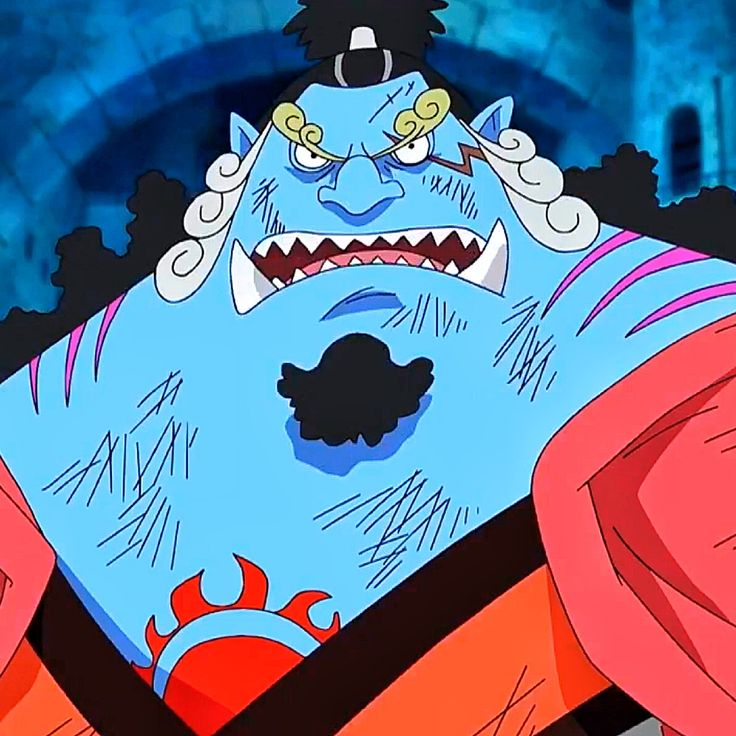
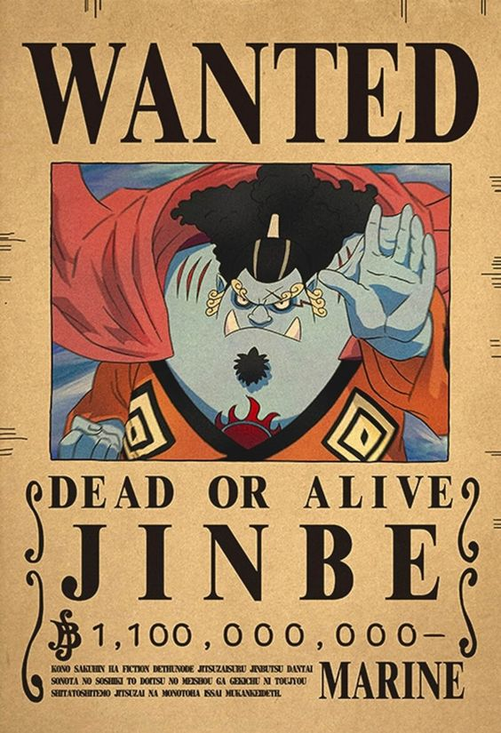
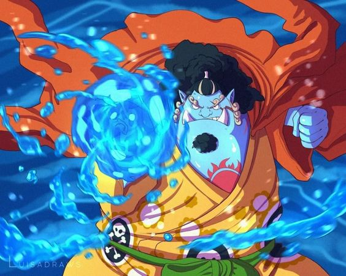
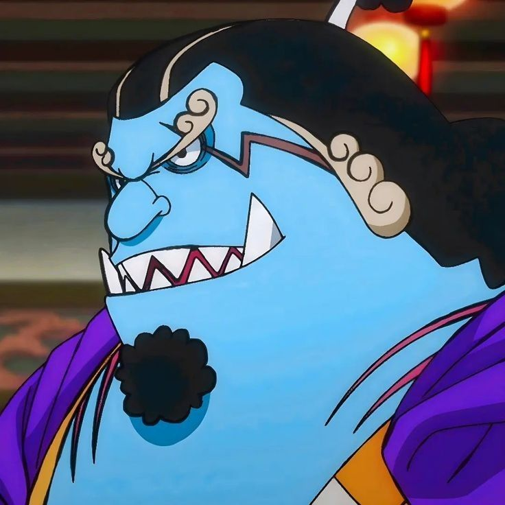

Jinbe

{kind=link}
También conocido como "Caballero del Mar" o "Jimbe el Pez Espadón", es un personaje importante en One Piece y se convierte en un miembro clave de los Piratas del Sombrero de Paja. Es un poderoso guerrero pez y un antiguo miembro de los Siete Guerreros del Mar. Jimbe es un hombre alto y musculoso con una apariencia de pez espada. Su piel es azulada y tiene aletas en varias partes de su cuerpo. Como miembro de una raza de hombres pez, Jimbe tiene habilidades acuáticas sobresalientes y puede respirar y luchar tanto en el agua como en tierra firme.

{kind=link}
Jimbe es conocido por su fuerte sentido del honor y justicia. Es un hombre de principios y siempre busca hacer lo correcto. A lo largo de su vida, ha sido defensor de los derechos de los hombres pez y ha luchado contra la discriminación y la opresión. Jimbe tiene una gran lealtad hacia sus compañeros y siempre está dispuesto a proteger y ayudar a sus amigos. En términos de habilidades de combate, Jimbe es un luchador excepcionalmente poderoso. Su fuerza física y resistencia son impresionantes, y sus habilidades marciales son formidables. Jimbe utiliza un estilo de lucha conocido como "Fish-Man Karate", que combina movimientos fluidos y poderosos para aprovechar su fuerza como hombre pez.

{kind=link}
Además de sus habilidades de combate, Jimbe tiene un control excepcional sobre el agua y puede utilizar poderosas técnicas acuáticas en sus ataques. También puede comunicarse con los animales marinos y utilizarlos en su beneficio durante las batallas. Jimbe se une oficialmente a los Piratas del Sombrero de Paja después de los eventos en la saga de Whole Cake Island. Su incorporación a la tripulación es un gran impulso para el grupo, ya que aporta su experiencia, habilidades de combate y sabiduría. Jimbe es un poderoso guerrero pez y miembro valioso de los Piratas del Sombrero de Paja. Su sentido del honor, su lealtad y su fuerza sobrehumana lo convierten en un personaje respetado en la serie One Piece. Con su experiencia como antiguo miembro de los Siete Guerreros del Mar, Jimbe desempeña un papel importante en la protección y el éxito de la tripulación en sus aventuras.

{kind=link}